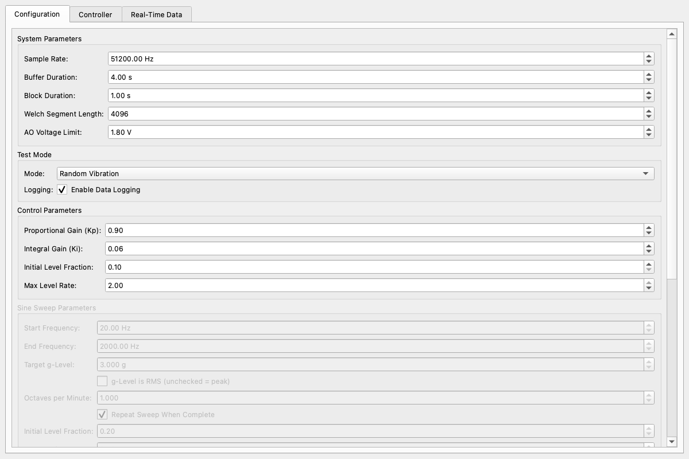
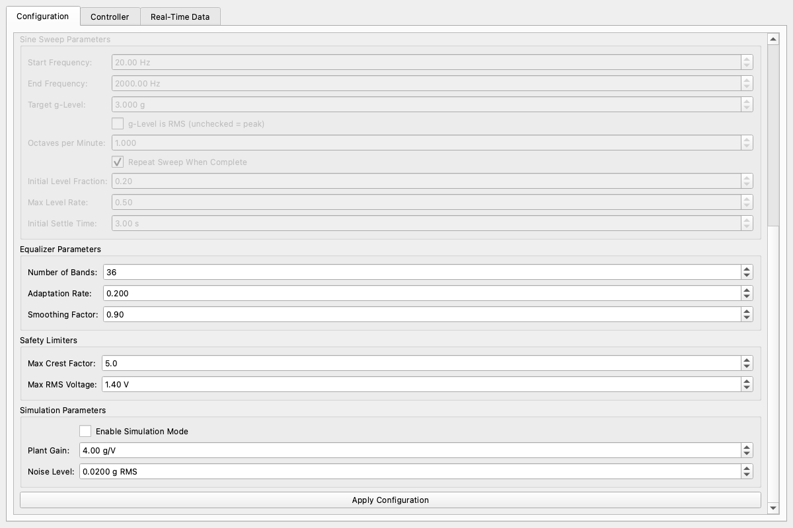
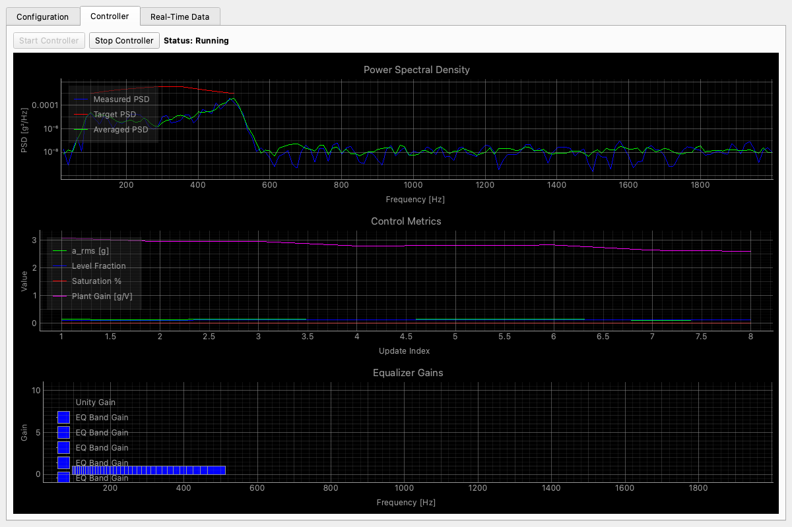
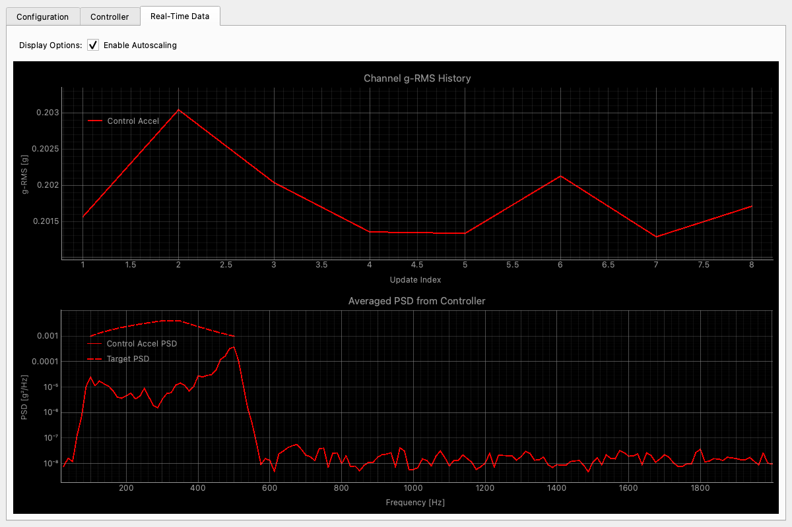
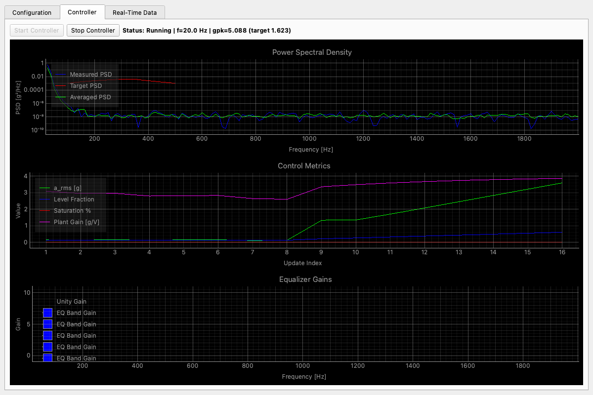
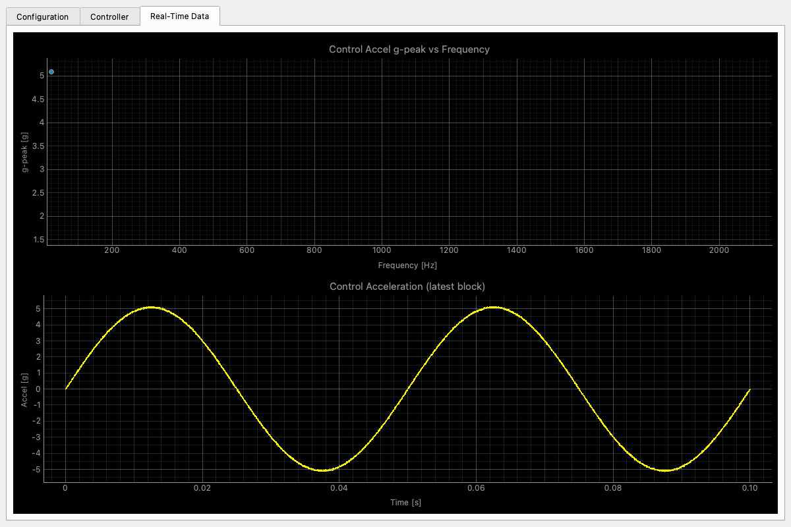
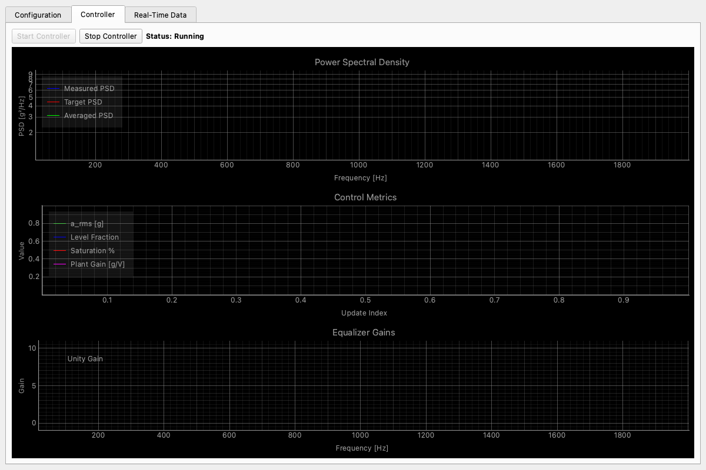
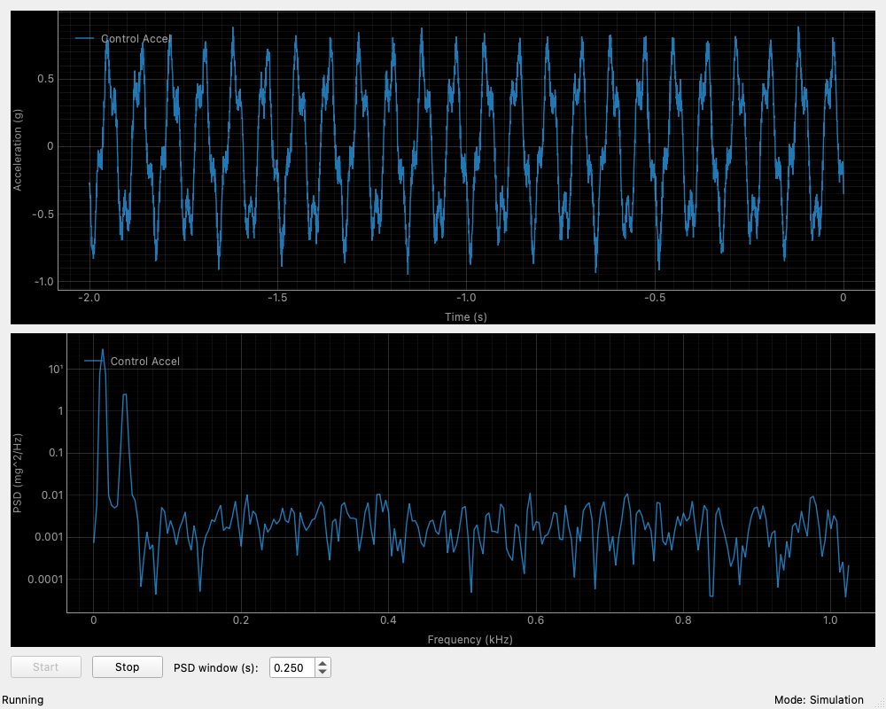

Audit of commit 3aa27a97079e829889849822bec03df82a6fb415, performed on 2026-10-14. Application source was not modified. Findings combine code review, native Qt screen captures, and simulation-only control/state probes.
| ID | Priority | Finding, recommendation, and source |
|---|---|---|
| F01 | First | Worker status and GUI run state are disconnected; an initialization failure leaves Running and a Stop action that does not recover the UI. Use one authoritative run lifecycle for start, stop, completion, fault, and backend status. app.py:1959-2000 |
| F02 | First | Apply mutates shared settings while the controller and viewer retain some old values; the viewer sample rate stays at its construction value. Separate editable draft from the validated configuration captured for a run; lock acquisition and mode changes during a run. app.py:601-643; app.py:949-980; app.py:1072-1073 |
| F03 | First | Individual widget ranges permit combinations that fail at initialization or disagree with effective control bounds. Validate Nyquist, block/PSD sizing, buffer sizing, level bounds, and units as a complete configuration; show errors beside fields before enabling Start. app.py:364-509; app.py:1691-1731; rv_controller.py:269-294 |
| F04 | Next | Apply and backend selection are below the fold; seven groups include inactive settings and the run controls exist only on the Controller tab. Keep backend, state, target summary, Start/Stop, and change status in the main window; reveal setup and advanced parameters when needed. app.py:352-549; app.py:672-693 |
| F05 | Next | Sine displays reuse the random PSD/EQ layout, retain the previous target, and keep histories across runs; EQ refresh accumulates legend entries. Reset each run and mode explicitly; show the mode-specific primary plot and use separate unchanged/clear/update semantics for plot updates. app.py:788-944 |
| F06 | Next | The metrics graph mixes g, dimensionless level, percent saturation, and g/V on one axis; labels and colors differ between the controller and data views. Use unit-specific numeric readouts and separate selected trends in elapsed seconds; keep measured/target colors and line styles consistent. app.py:716-743; app.py:1004-1058 |
| F07 | Next | The monitor accepts a 10-second PSD window with a 2-second buffer and overwrites fault text with Stopped. Match retained samples to the requested analysis window or report the effective window; retain faults until dismissed or a new run starts. accel_monitor.py:406-417; accel_monitor.py:578-592; accel_monitor.py:606-620 |
| F08 | Later | Targets, channels, calibration provenance, and log output paths are largely file-based; there is no visible review of the exact setup used for a completed run. Add editable target/channel setup, calibration source, effective settings, and a results view with log locations and summaries. config.py; monitor_config.py; app.py:67-247; app.py:601-643 |
Set up → Validate → Ready → Start → Run → Stop/Complete → Review. A fault is a separate retained state. Backend, test mode, effective target, logging status, and Stop remain visible across all views.
These are captures of the existing native Qt widgets using the offscreen platform, not images of the proposed interface. The random and sine views contain actual simulation packets. The failure screenshot comes from a real initialization failure before DAQ setup.








The local browser preview passed checks for invalid sample-rate feedback, apply/start/stop state transitions, persistent Stop during review, mode-specific plots and units, removal of irrelevant monitor controls, and the guided setup flow. Layouts were checked at 320 and 1,024 pixels with no horizontal overflow. Browser console errors: none.
The proposed interface is an interactive design sketch with illustrative data. It does not execute the application, open hardware tasks, or record a real run. The existing native GUI and the proposal were evaluated separately.